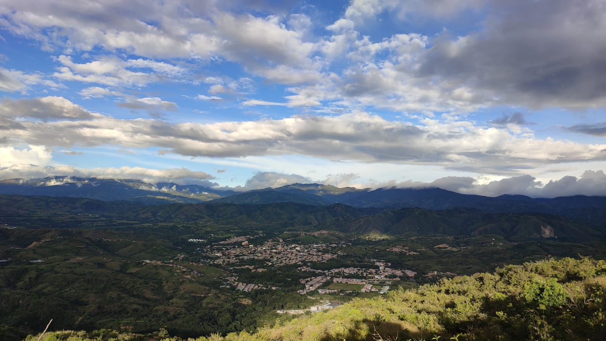
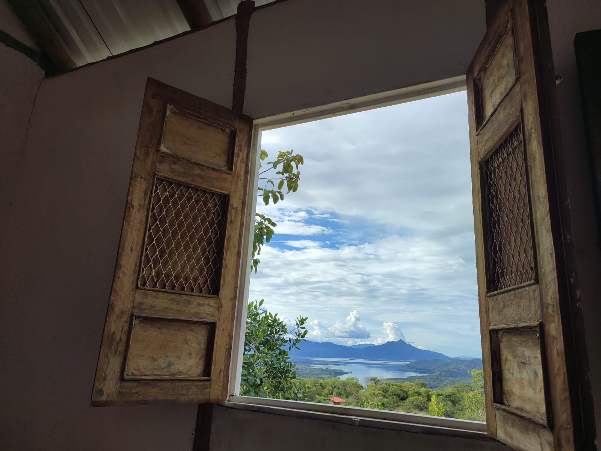
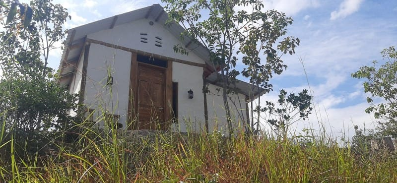
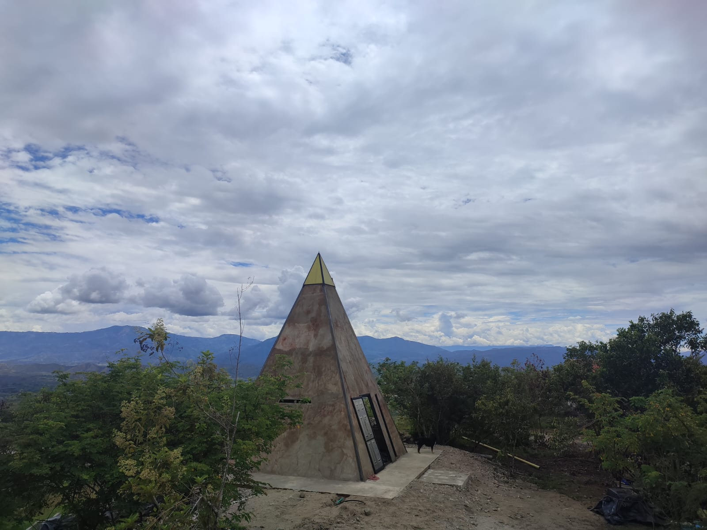
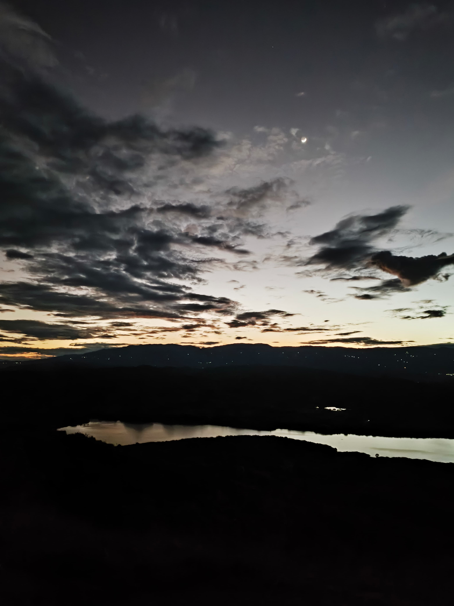
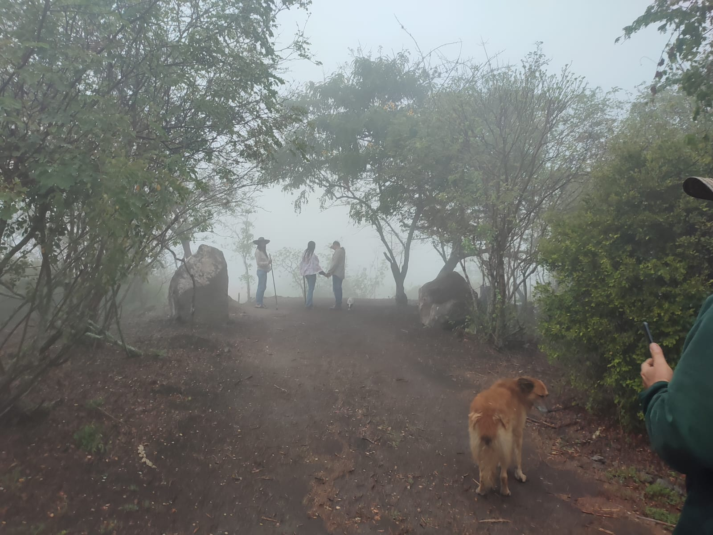
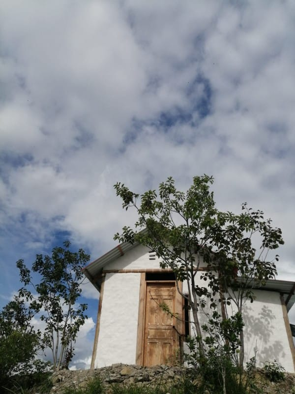
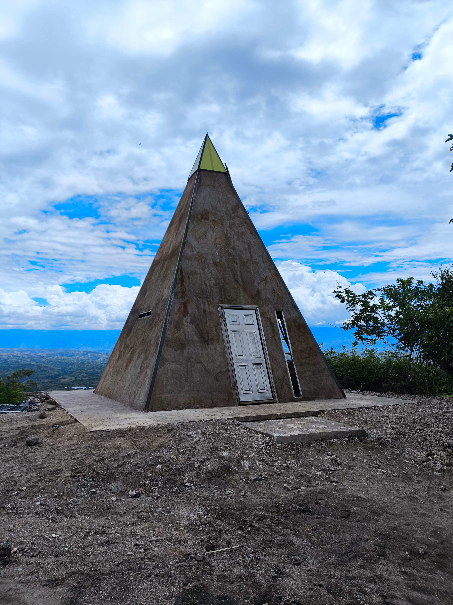

Senderismo Guiado
Caminos entre vegetación nativa y neblina andina. Nuestros guías te llevan a los puntos más mágicos del parque, con historias de la región y paradas para contemplar el paisaje.
Conecta con la Tierra

Un espacio de turismo ecológico diseñado para el descanso, la conexión con la naturaleza y el bienestar físico y emocional. Rodeado de la riqueza ancestral y los paisajes únicos del Huila.
Proyecto Co-financiado y Avalado
SENA
Servicio Nacional de Aprendizaje
FONDO EMPRENDER
Capital Semilla Colombia
PRESIDENCIA
República de Colombia
En Parque Mirador Conuco nos basamos en promover un turismo consciente, donde cada experiencia contribuya al bienestar físico, emocional y espiritual de nuestros visitantes, mientras cuidamos y respetamos el entorno natural.
Aquí las personas viven una experiencia de descanso y renovación. Un espacio donde pueden recargar energías, encontrar paz y sentir bienestar a través de la naturaleza, los árboles, el paisaje y la riqueza ancestral de nuestra cultura.
Cuidamos el entorno natural en cada rincón del parque para generaciones futuras.
Cabañas diseñadas con formas ancestrales que armonizan energía y descanso profundo.
Conexión natural que alivia el estrés y restaura el equilibrio interior.
Actividades para aprender, conectar y valorar la biodiversidad del Huila.

"Preparamos cada detalle para que tu visita sea una experiencia de renovación y conexión genuina con la naturaleza del Huila."
Familia Conuco
Fundadores del Parque
Una probada de lo que te espera




Visita de día · Sin pernoctar
Noche en cabaña o camping
Dos conceptos arquitectónicos que honran la tradición y la energía ancestral del territorio.

Construidas con materiales que evocan la arquitectura colonial del Huila. Paredes de bahareque, puertas de madera artesanal y amplios ventanales que enmarcan los paisajes del embalse y la cordillera como una obra de arte viva.

La forma piramidal no es solo estética: es una elección intencional. Basada en principios de geometría sagrada, estas cabañas concentran la energía del entorno para un descanso profundo y una reconexión espiritual bajo el cielo abierto del Huila.
Pago seguro con Wompi · Confirmación inmediata por WhatsApp
Caminos entre vegetación nativa y neblina andina. Nuestros guías te llevan a los puntos más mágicos del parque, con historias de la región y paradas para contemplar el paisaje.
Observa desde las alturas el Embalse del Quimbo, el segundo puente más largo de Colombia y la cadena de cordilleras que rodean Garzón. Una vista que detiene el tiempo.
Cuando el sol se pone sobre el embalse y las montañas se tiñen de naranja, encendemos la fogata. Comparte historias, escucha el silencio del campo y duerme bajo un manto de estrellas que solo el campo del Huila puede ofrecer.
Parque Mirador Conuco no es solo un hospedaje — es una ventana a la identidad profunda del Huila. Desde aquí contemplas algunos de los paisajes más significativos del sur de Colombia.
Una de las grandes obras hídricas del país, visible en toda su magnitud desde nuestros miradores. Sus aguas reflejan el cielo del Huila en una postal que cambia con cada hora del día.
Colombia se ve grande desde aquí. A pocos kilómetros descansa una de las obras de ingeniería vial más impresionantes del país, enmarcada por la cordillera Oriental.
La geometría sagrada de nuestras cabañas piramidales honra las tradiciones ancestrales del territorio. El Huila fue cuna de culturas precolombinas cuya energía aún vibra en estas tierras.
La Cordillera Central y la Oriental convergen en el horizonte desde nuestro mirador. Ver sus cumbres entre nubes es comprender por qué los ancestros de estas tierras consideraban las montañas lugares sagrados.
La Vereda Huacanas es hogar de aves endémicas, plantas medicinales y ecosistemas en transición entre el bosque seco tropical y el bosque subandino.
¿Listo para recargar energía?
Escríbenos directamente. Te respondemos rápido y te orientamos para que tu experiencia en Conuco sea exactamente lo que necesitas.
En vehículo: Acceso directo desde la vía principal del Alto Garzón. Parqueadero disponible.
En transporte público: Desde el Terminal de Garzón pregunta por la ruta a la Vereda Huacanas.
Al confirmar tu visita te compartimos la ubicación GPS exacta por WhatsApp.
@parquemiradorconuco_
parquemiradorconuco
@gmail.com
Escríbenos directamente por WhatsApp o a nuestro correo parquemiradorconuco@gmail.com. También puedes encontrarnos en Instagram como @parquemiradorconuco_. Te responderemos rápidamente con disponibilidad y toda la información que necesitas.
El Plan Día incluye senderismo guiado, conexión con la naturaleza y zona de descanso sin pernoctar. El Plan con Alojamiento añade la noche en cabaña colonial, piramidal o zona de camping, más experiencia nocturna, fogata y desayuno campestre al día siguiente.
Sí, contamos con zona de parqueo. Estamos en la Vereda Huacanas, a 100 metros de la Estación de Gasolina del Alto Garzón, detrás del Terminal. Al confirmar tu visita te enviamos la ubicación GPS exacta por WhatsApp.
Sí. Parque Mirador Conuco es un proyecto aprobado y co-financiado por el Fondo Emprender SENA y la Presidencia de la República de Colombia, lo que garantiza estándares de calidad, sostenibilidad y desarrollo regional.
¡Absolutamente! Parque Mirador Conuco está diseñado para toda la familia. Los senderos y espacios de descanso son seguros y accesibles. Es una experiencia ideal para que los niños descubran la naturaleza, los animales y la cultura del Huila.